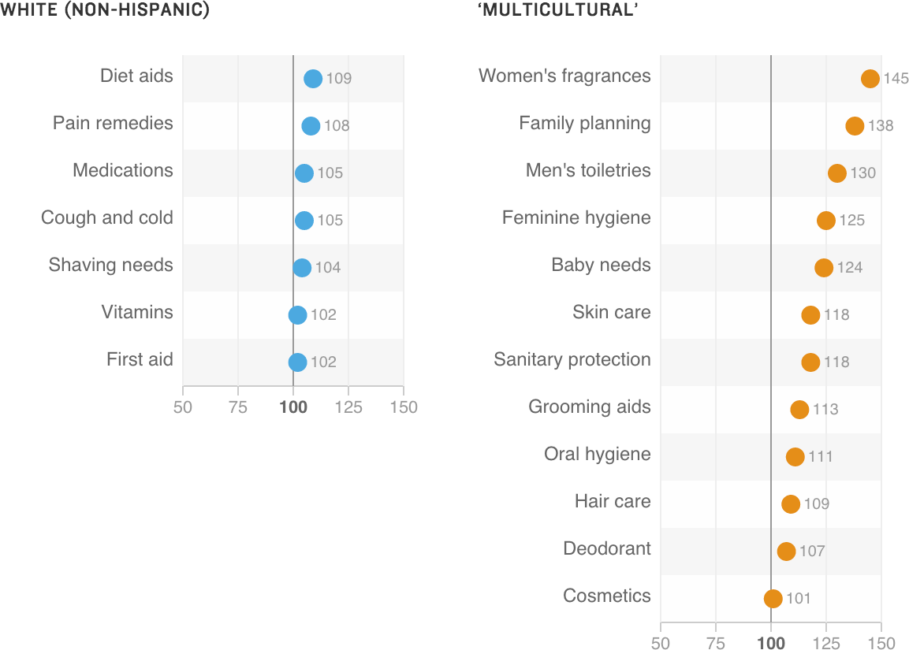

Shopping In The Health And Beauty Aisle
According to the Nielsen report, “multicultural” consumers disproportionately buy certain product categories, and to a greater degree, compared with non-Hispanic white consumers. These charts index how much a group spends vs. how much one might expect it to spend given its share of the market. Values over 100 indicate disproportionately higher spending.
